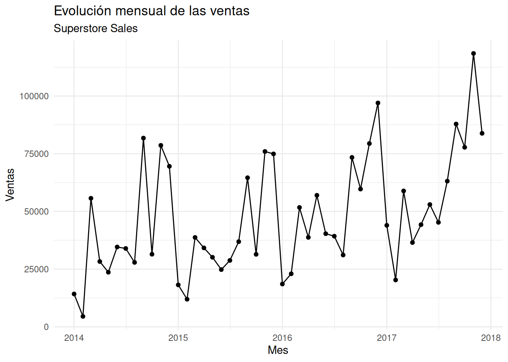
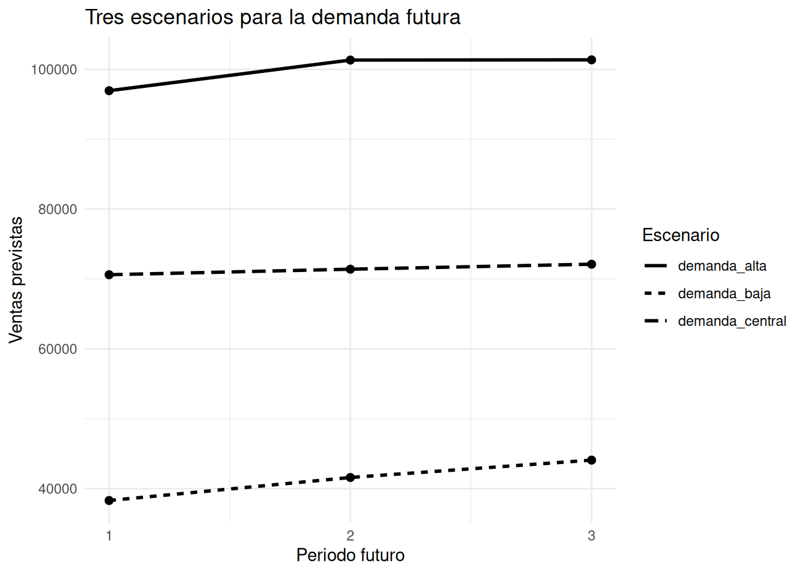
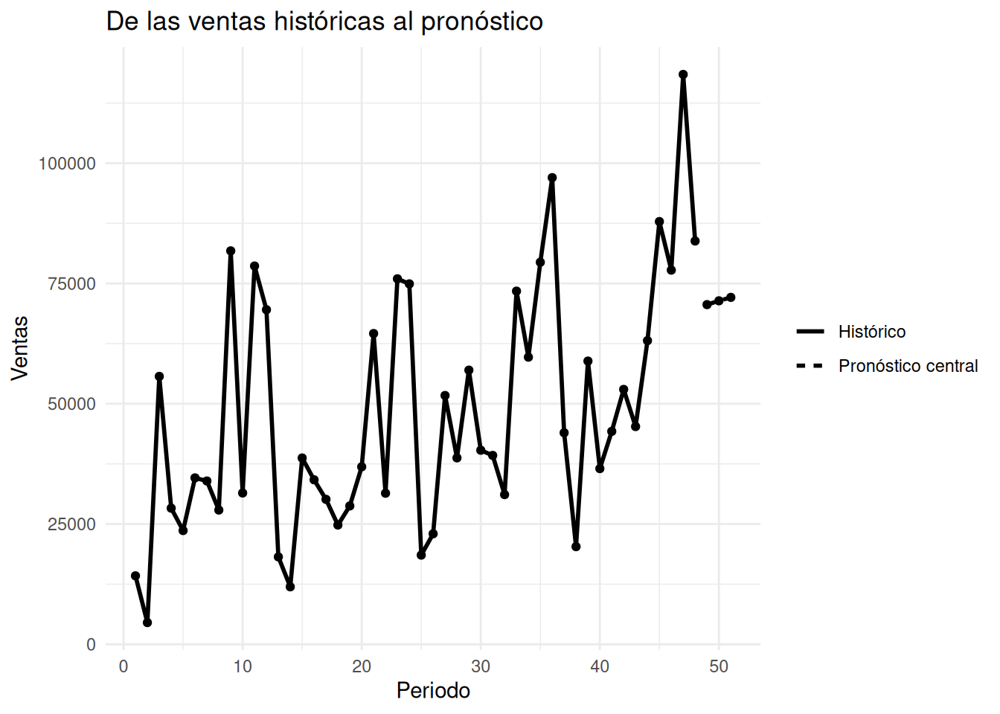

¿Cómo transformar un pronóstico en un plan de inventario?
Retail
Forecasting
Operaciones
Un pronóstico no es una decisión. Exploramos cómo convertir escenarios bayesianos de ventas en una referencia práctica para planificar inventario.
Author
David Villafuerte, MD, MBA
Published
September 12, 2026
¿Cuánto inventario deberíamos preparar para el próximo periodo?
Predecir las ventas del próximo periodo puede parecer el objetivo final de un análisis. Sin embargo, para una empresa el pronóstico es solamente el comienzo.
Una empresa no compra un pronóstico.
Compra productos, prepara inventario, asigna recursos y toma decisiones tratando de evitar dos problemas opuestos:
quedarse sin producto cuando la demanda aumenta;
mantener demasiado inventario cuando la demanda termina siendo menor de lo esperado.
Por eso, una pregunta más útil que “¿cuánto venderemos?” es:
¿Qué nivel de demanda deberíamos considerar al preparar nuestro próximo periodo?
En esta entrada utilizaremos el dataset Superstore Sales para construir un pronóstico bayesiano de ventas y transformarlo en tres escenarios: bajo, central y alto.
La idea no es producir un número mágico. Es convertir la incertidumbre del pronóstico en información que pueda utilizarse para tomar una decisión.
1. El problema de negocio
Imaginemos que estamos cerrando diciembre de 2017 y necesitamos prepararnos para los siguientes tres meses.
Podríamos mirar simplemente las ventas históricas y calcular un promedio.
Pero ese enfoque tiene una limitación importante: el futuro no es un promedio.
Las ventas pueden continuar creciendo, pueden ser menores de lo esperado o pueden situarse en algún punto intermedio.
El análisis bayesiano nos permite plantear el problema de una manera diferente:
En lugar de preguntar cuál será exactamente la próxima venta, podemos preguntar qué valores de demanda futura son plausibles.
Esto resulta especialmente útil para inventario.
Si solamente tuviéramos un pronóstico puntual de $70.000, todavía tendríamos que decidir si preparar $70.000 de inventario, algo más o algo menos.
Si en cambio conocemos un escenario bajo, uno central y uno alto, podemos relacionar cada escenario con una estrategia operativa diferente.
2. Los datos
Trabajaremos nuevamente con Superstore Sales, manteniendo la estructura original del dataset.
Nuestro interés estará en dos variables:
Order Date: fecha de la orden.
Sales: valor monetario de la venta.
Primero cargamos los datos y verificamos su estructura.
ggplot( ventas_mensuales,aes(x = mes, y = ventas)) +geom_line() +geom_point() +labs(title ="Evolución mensual de las ventas",subtitle ="Superstore Sales",x ="Mes",y ="Ventas" ) +theme_minimal()

La primera característica que destaca es una tendencia general creciente.
Durante 2014 los valores máximos mensuales se encuentran por encima de $80.000. En 2015 los máximos se sitúan alrededor de $75.000, mientras que durante 2016 aparecen meses cercanos a $100.000.
En 2017 la escala aumenta todavía más, con meses que alcanzan aproximadamente $118.000.
También observamos un comportamiento estacional aparente: noviembre y diciembre suelen encontrarse entre los meses de mayores ventas, mientras que enero y febrero tienden a presentar valores más bajos.
Esto ya nos proporciona una primera lección.
El pasado contiene información útil sobre el futuro, pero no toda esa información tiene que comportarse de la misma manera.
4. Construimos una referencia temporal
Para construir un modelo sencillo necesitamos representar el paso del tiempo mediante una variable numérica.
La mediana posterior del coeficiente tiempo es aproximadamente $906.
En términos sencillos, el modelo sitúa el crecimiento esperado de las ventas alrededor de $906 por cada periodo mensual adicional, manteniendo la estructura lineal del modelo.
Esto no significa que cada mes vaya a aumentar exactamente $906.
Es una forma de describir la tendencia promedio que el modelo encuentra en los datos.
El parámetro sigma, cuya mediana posterior es aproximadamente $22.124, representa la magnitud típica de la variación residual alrededor de la relación estimada.
Es una cantidad importante porque nos recuerda que existe una diferencia considerable entre una tendencia promedio y las ventas que finalmente pueden observarse.
Una precisión importante sobre el intercepto
El intercepto tiene una mediana de aproximadamente $25.528.
Pero no debemos interpretarlo como las ventas reales de un mes observado.
Nuestro primer mes corresponde a tiempo = 1, por lo que el intercepto representa el valor que el modelo asignaría a tiempo = 0.
Es decir, se trata de una extrapolación matemática de la recta, no de un mes histórico real de Superstore.
Por eso, para la decisión empresarial nos interesa mucho más utilizar el modelo para generar predicciones futuras.
6. Mirar hacia adelante
Supongamos que queremos preparar los siguientes tres periodos.
Después del periodo 48, nuestros nuevos periodos serán 49, 50 y 51.
En otras palabras, en lugar de obtener simplemente:
“El próximo periodo venderemos $70.000.”
obtenemos una distribución de posibles resultados.
Esto cambia completamente la conversación empresarial.
Ya no estamos tratando de adivinar el futuro.
Estamos intentando entender el rango de resultados plausibles para poder decidir mejor.
Adicionalmente transformamos las predicciones posteriores a un formato de tabla para poder usarlas en otras transformaciones y grafícos
# Transformar las predicciones posteriores a formato de tablapredicciones_df <-as.data.frame(predicciones)# Renombrar los nombres de las variables de las predicciones# posteriores para los meses 49, 50 y 51colnames(predicciones_df) <-paste0("periodo_", futuro$tiempo)
7. Tres escenarios para la demanda
Para convertir esa distribución en algo que pueda utilizarse en una conversación empresarial, resumiremos las predicciones mediante tres puntos:
Aquí aparece la parte más importante del análisis.
Para el periodo 1, por ejemplo, la predicción central es de aproximadamente $69.525.
Pero el modelo también considera escenarios plausibles alrededor de ella:
un escenario bajo cercano a $40.504;
un escenario central de $69.525;
un escenario alto de $100.352.
No estamos diciendo que esos sean los únicos tres resultados posibles.
Son tres puntos de referencia extraídos de toda la distribución predictiva.
El intervalo entre los percentiles 10 y 90 representa un intervalo predictivo central del 80%.
No significa que “el 80% de las ventas estará ahí” en un sentido literal sobre observaciones futuras individuales. Significa que estamos utilizando los percentiles 10 y 90 de la distribución predictiva como límites de un rango central de resultados plausibles generado por el modelo.
8. Visualizar los escenarios
Podemos llevar estos resultados a un gráfico.

La gráfica permite observar algo que una única cifra no podría mostrar.
El escenario central aumenta progresivamente:
periodo 1: $69.525;
periodo 2: $70.611;
periodo 3: $72.765.
Pero la incertidumbre alrededor de esos valores sigue siendo amplia.
El escenario alto se mantiene alrededor de $100.000, mientras que el escenario bajo se encuentra cerca de $40.000.
Por lo tanto, el crecimiento de la tendencia no elimina la incertidumbre.
El futuro puede continuar creciendo y, al mismo tiempo, seguir siendo incierto.
9. Del histórico al futuro
Hasta ahora hemos separado visualmente la historia del pronóstico.
Podemos colocarlos juntos para observar cómo el modelo extiende la tendencia después del último periodo observado.

El último periodo histórico corresponde a diciembre de 2017.
A partir de ahí, los tres periodos pronosticados representan enero, febrero y marzo de 2018.
El modelo proyecta un escenario central que continúa aumentando.
Sin embargo, hay que recordar qué estamos viendo:
hasta diciembre de 2017 observamos datos reales;
desde enero de 2018 estamos observando valores generados por el modelo.
Esta separación es fundamental.
Un pronóstico no convierte el futuro en datos observados.
10. Ahora sí: ¿qué hacemos con el inventario?
Aquí es donde el análisis deja de ser solamente estadístico.
Supongamos que una empresa necesita decidir cuánto preparar para el siguiente periodo.
Tenemos tres referencias:
Escenario
Demanda aproximada
Bajo
$40.504
Central
$69.525
Alto
$100.352
Cada cifra puede conducir a una decisión diferente.
Si utilizamos el escenario central
Podríamos planificar alrededor de $69.525 de ventas esperadas.
Es una referencia razonable si el costo de mantener inventario adicional es importante y la empresa puede aceptar cierto riesgo de quedarse corta.
Si damos mayor importancia al riesgo de quedarse sin producto
El escenario alto, cercano a $100.352, puede convertirse en una referencia más conservadora.
La lógica es sencilla:
Si el costo de quedarse sin producto es muy alto, puede tener sentido planificar considerando una parte más alta de la distribución predictiva.
Si el costo de exceso de inventario es muy elevado
Podría ser preferible utilizar una referencia más cercana al escenario bajo o central.
En ese caso, la empresa estaría aceptando mayor riesgo de no cubrir una demanda elevada a cambio de reducir el capital comprometido en inventario.
Aquí aparece una idea fundamental de Business Analytics:
El mejor escenario no depende únicamente del pronóstico. Depende también del costo de equivocarse.
11. Una tabla para apoyar la decisión
Podemos transformar los resultados en una tabla sencilla que pueda utilizarse directamente en una conversación de negocio.
El resultado resume nuestra referencia para los tres meses:
Periodo
Escenario bajo
Escenario central
Escenario alto
Periodo 1
$40.504
$69.525
$100.352
Periodo 2
$40.279
$70.611
$100.683
Periodo 3
$42.919
$72.765
$99.711
Esta tabla es probablemente más útil para un responsable de operaciones que una página llena de estadísticas del modelo.
La razón es sencilla.
El objetivo del análisis no es que el responsable de operaciones conozca stan_glm().
El objetivo es que pueda responder:
“¿Qué escenario queremos utilizar para nuestra decisión?”
12. Una limitación importante: ventas no son unidades de inventario
Hay una precisión que debemos hacer antes de convertir estos resultados en una política real de inventario.
El dataset contiene ventas monetarias, no unidades físicas disponibles ni cantidades de inventario.
Por lo tanto, este análisis no nos permite decir directamente:
“Debemos almacenar 700 unidades.”
Tampoco permite transformar automáticamente $70.000 de ventas en una cantidad concreta de productos.
Lo que sí podemos obtener es una referencia monetaria de la demanda futura.
Esto puede ser útil como primera aproximación para planificación, pero un sistema real de inventario necesitaría información adicional, por ejemplo:
unidades vendidas;
inventario disponible;
inventario de seguridad;
tiempos de reposición;
costo de mantener inventario;
costo de quedarse sin producto;
precio y margen por producto;
demanda por categoría o producto.
Esta diferencia no es un detalle menor.
Un buen análisis no solamente explica lo que los datos permiten hacer. También deja claro lo que todavía no permiten hacer.
13. Otra limitación: la estacionalidad
También observamos un comportamiento estacional en los datos.
Noviembre y diciembre tienden a presentar mayores ventas, mientras que enero y febrero tienden a ser más bajos.
Sin embargo, nuestro modelo utiliza únicamente:
ventas ~ tiempo
Por lo tanto, está capturando principalmente una tendencia temporal general.
No está modelando explícitamente cada mes del año.
Esto significa que debemos interpretar el pronóstico como una primera referencia probabilística y no como un sistema completo de forecasting operativo.
Un siguiente modelo podría incorporar la estructura mensual y otros factores relevantes.
Pero esta limitación también tiene una ventaja.
Comenzamos con un modelo suficientemente sencillo como para entender la lógica fundamental:
historia → tendencia → distribución predictiva → escenarios → decisión.
14. La verdadera utilidad del pronóstico bayesiano
El resultado más importante de este análisis no es $69.525.
Tampoco es $100.352.
La verdadera utilidad está en cambiar la pregunta.
Una aproximación tradicional podría llevarnos a preguntar:
“¿Cuánto vamos a vender?”
El enfoque probabilístico nos lleva a preguntar:
“¿Qué niveles de ventas futuras son plausibles y qué decisión tomaríamos frente a cada uno?”
Esta segunda pregunta es mucho más cercana a la realidad empresarial.
Porque las decisiones se toman antes de conocer el futuro.
Y cuando el futuro es incierto, una cifra puntual puede transmitir una falsa sensación de precisión.
Una distribución, en cambio, nos permite reconocer explícitamente esa incertidumbre.
15. Del pronóstico a la decisión
Podemos resumir todo el proceso de esta entrada en cinco pasos:
1. Observar
Partimos de las ventas históricas y buscamos patrones relevantes.
2. Modelar
Construimos un modelo bayesiano que representa la tendencia temporal.
3. Predecir
Generamos una distribución de posibles ventas futuras mediante posterior_predict().
4. Crear escenarios
Extraemos referencias bajo, central y alto a partir de la distribución predictiva.
5. Decidir
Relacionamos esos escenarios con el costo y el riesgo de las diferentes decisiones de inventario.
La parte estadística termina en el paso 4.
La parte de Business Analytics comienza realmente en el paso 5.
16. Reflexión bayesiana
Una de las ideas más poderosas del enfoque bayesiano es que la incertidumbre no es un defecto que debamos esconder.
Es información.
En nuestro ejemplo sabemos que el escenario central para el primer periodo es de aproximadamente $69.525.
Pero también sabemos que el modelo considera escenarios considerablemente menores y mayores.
Eso nos permite tener una conversación más madura:
“Nuestro escenario central es aproximadamente $70.000, pero existe una incertidumbre importante. Si el costo de quedarnos sin producto es alto, debemos considerar un nivel superior. Si el costo de mantener inventario es alto, quizá prefiramos asumir parte de ese riesgo.”
Esa conversación es mucho más útil que afirmar:
“El próximo mes venderemos $69.525.”
El primer planteamiento reconoce que estamos tomando una decisión bajo incertidumbre.
El segundo convierte una predicción en una falsa certeza.
17. Conclusión
Un pronóstico no es un plan de inventario.
Es una pieza de información que ayuda a construirlo.
En este análisis utilizamos cuatro años de ventas mensuales de Superstore Sales y un modelo bayesiano sencillo para proyectar los siguientes tres periodos.
El escenario central pasó de aproximadamente $69.525 en el primer periodo a $72.765 en el tercero.
Pero el modelo también mostró escenarios mucho más bajos y altos, alrededor de $40.000 y $100.000, respectivamente.
La conclusión empresarial no es que debamos elegir automáticamente el escenario alto, central o bajo.
La conclusión es que la elección debe depender del costo de equivocarnos.
Si quedarse sin producto es muy costoso, podemos preferir una referencia más conservadora.
Si mantener inventario adicional es muy costoso, podemos aceptar mayor riesgo y trabajar más cerca del escenario central.
Y si necesitamos una planificación realmente operativa, tendremos que enriquecer el modelo con unidades, inventario, costos, tiempos de reposición y estacionalidad.
Ese es precisamente el valor de Business Analytics Bayesiano:
no intentar eliminar la incertidumbre, sino convertirla en información útil para tomar mejores decisiones.
Apéndice: código completo
El siguiente bloque reúne todo el código utilizado en esta entrada, en el mismo orden en que aparece en el análisis.